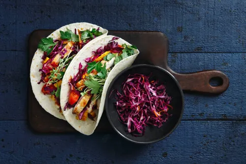

Tacos
Home

Description:
The new recipes of our special dish
Tacos are a traditional Mexican dish made with tortillas filled with meat, vegetables, and sauce. This recipe is easy to make at home
Ingredients:
- 1/2 kg finely ground meat
- 1/2 teaspoon salt
- 1 teaspoon taco seasoning
- 3 tablespoons hot water
- 4 tomatoes
- 1/2 teaspoon taco seasoning
- 1 teaspoon basil
- 1/2 teaspoon salt
- 1 small onion
- 2 small tomatoes
- 5 lettuce leaves
- 12 pieces of seeded bread, tortillas, or small Arabic flatbreads
Steps:
- (The Sauce) Wash, peel, and remove the seeds from the tomatoes. Chop them, process them (or blend them), then place the mixture in a pot. Add the spices and cook over medium heat until boiling; then, reduce the heat to low and simmer for about 10 minutes
- Peel and finely chop the onion. Wash the tomatoes and lettuce leaves, finely chop them, and place each ingredient in a separate dish.
- Meanwhile, place the meat in a frying pan and cook it (without oil or ghee), adding salt and spices during the process. Once cooked, gradually add 3 tablespoons of hot water until steam rises. Add the onion and sauté with the meat over low heat. Then, pour the sauce over the mixture, cook over medium heat for about 10 minutes, and remove from the heat.
- Take the bread (tortillas), add a little lettuce and tomato, then top with the meat mixture.
- Serve hot and immediately. Bon appétit! 😊
- An alternative spicy taco method: Blend the tomatoes with 2 hot green peppers and set the mixture aside (do not mix it with the smoked meat); add the avocado spread to the sandwich.
- Use toasted corn tortillas; layer on the smoked meat, followed by the tomatoes, lettuce, and hot sauce, then a large spoonful of avocado spread.
- Bon appétit! 😊